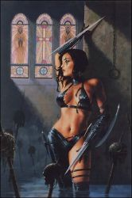

Les Terres de Kirin Tor
Neph'o
Points : -3

Joué par :
[ Information masquée ]
Age : 19
Lieu de naisance : Inconnu
Signe de naissance : Inconnu
Sexe : Femme
Race : Humain
Faction : Alliance
Formation : Guerrier
Guilde :
Artisanat 1 : Forgeron
Envoyer un MP
Description : Neph'o ressemble enormement à Cheena. Les rares differences entre elles deux sont a couleur de leur cheveux, leur teint et leur expression... Car Neph'o a gardé sur son visage celle d'une enfant, faisant constemment la moue. Moue explicable par ses difficultés d'integration au sein de la communauté elfique...
Ère du Renouveau [1]
Lune de la Force [1]
Décade du Panda [1]
Des enfants...
- ...non, je n'aime pas les enfants, je ne pense pas que j'en aurais un jour.
- Mais si ! C'est une experience à côté de laquelle on ne peut pas passer ! Comment peux-tu penser cela...
- Pff ! Mais de quoi tu parles, et puis, j'ai encore toute la vie devant moi pour y penser. Donner naissance ne m'embale par pour le moment...
- Allez, que dirais-tu de... hm... du beau Dénahir ? Ne m'as-tu jamais dit que tu le trouvais craquant...
La jeune elfe qui n'aimait pas les enfants haussa les épaules, s'arrêta quelques instants pour observer la forêt de laquelle ils essayaient de se sortir, et continua d'avancer, arc en main. Les temps n'étaient pas trop surs, leur petite troupe d'elfes pourrait être attaquée d'un moment à l'autre.
- ...et de plus, je suis sure que vous auriez tôt fait de vous installer dans...
D'ailleurs, les cris qui se rapprochaient conforta la chasseresse dans son opinion. Elle s'empara de quelques flêches de son carquois, prête à percer le premier venu. La troupe s'immobilisa, aux aguets.
- ...lachez-les ! Non !, hurlait une femme un peu plus loin. Mes filles ! Non !
- Rhaaa... Ferme-la...
Un bruit sourd suivit, accompagné de rires gras et desagréables.
- Par Elune... Mais qu'est-ce que...?
Décade du Gorille
Décade de l'Ours
Lune d'Agilité
Décade du Tigre
Décade du Singe
Décade du Faucon
Lune de l'Esprit
Décade de la Chouette
Décade de la Baleine
Décade du Lapin